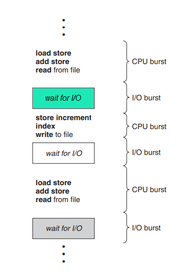

CPU scheduling is the basis of multiprogrammed operating systems. By switching the CPU among processes, the operating system can make the computer more productive.
CPU Scheduling is a process of determining which process will own CPU for execution while another process is on hold. The main task of CPU scheduling is to make sure that whenever the CPU remains idle, the OS selects at least one of the processes available in the ready queue for execution. The selection process is carried out by the short-term scheduler, or CPU scheduler.
The objective of multiprogramming is to have some process running at all times, to maximize CPU utilization. The idea is relatively simple. A process is executed until it must wait, typically for the completion of some I/O request. In a simple computer system, the CPU then just sits idle. With multiprogramming, we try to use this time productively. Several processes are kept in memory at one time. When one process has to wait, the operating system takes the CPU away from that process and gives the CPU to another process. This pattern continues. This is possible only with process scheduling.
Process execution consists of a cycle of CPU execution and I/O wait. Processes alternate between these two states. Process execution begins with a CPU burst. That is followed by an I/O burst, which is followed by another CPU burst, then another I/O burst, and so on. Eventually, the final CPU burst ends with a system request to terminate execution.
Completion Time:Time at which process completes its execution.
Burst Time: Time required by a process for CPU execution.
Arrival Time: Time at which the process arrives in the ready queue.
The following characteristics are used to compare CPU-scheduling algorithms which facilitates us to judge the best CPU-scheduling algorithm to be used.
Nonpreemptive Scheduling: Once the CPU has been allocated to a process, the process keeps the CPU until it releases the CPU either by terminating or by switching to the waiting state.
Nonpreemptive scheduling algorithms are:
Preemptive Scheduling: It is used when a process switches from running state to ready state or from the waiting state to ready state.
Preemptive scheduling algorithms are: